화공기사(구) (2014-05-25 기출문제)
1과목: 화공열역학
1. 이상기체애 대한 설명으로 들린 것은?
- 이상기체의 엔탈피는 온도만의 함수이다.
- 이상기체의 내부에너지는 온도만의 함수이다.
- 이상기체의 열효과는 온도만의 함수이다.
- 이상기체의 경우 Cp=Cv+R이다.
(정답률: 82%)

2. 어떤 과학자가 자기가 만든 열기관이 80°C 와 10°C 사이에서 작동하면서 100cal의 열을 받아 20cal 의 유용한 일을 할 수 있다고 주장한다. 이 과학자의 주장에 대한 판단으로 옳은 것은?
- 열역학 제0법칙에 위배된다.
- 열역학 제1법칙에 위배된다.
- 열역학 제2법칙에 위배된다.
- 타당하다.
(정답률: 84%)
3. 엔트로피와 에너지에 관한 설명 중 틀린 것은?
- 절대온도 0 K에서 완벽한 결정구조체의 엔트로피는 0 이다.
- 시스템과 주변환경을 포함하여 엔트로피가 감소하는 공정은 있을 수 없다.
- 고립된 계의 에너지는 항상 일정하다.
- 고립된 계의 엔트로피는 항상 일정하다.
(정답률: 86%)
4. 1atm. 100℃ 포화수증기의 엔탈피(H)와 엔트로피(S)는 각각 얼마인가? (단, 0℃ 포화수의 S=0, H=0, 0℃ 에 100℃ 까지 물의 평균비열은 1.0kcal/kg⋅℃, 100℃ 에 대한. 증발잠열은 538.9kcal/kg 이다.)
- H = 538.9kcal/kg, S = 1.756kcal/kg·K
- H = 638.9kcal/kg, S = 1.443kcal/kg·K
- H = 638.9kcal/kg, S = 1.756kcal/kg·K
- H = 100kcal/kg, S = 0.312kcal/kg·K
(정답률: 72%)
5. 다음 중 화학포텐셜(Chemical potential)과 같은 것은?
- 부분몰 깁스(Gibbs)자유에너지
- 부분몰 엔탈피
- 부분몰 엔트로피
- 부분몰 용적
(정답률: 100%)
6. 플래쉬(Flash) 계산에 대한 다음의 설명 중 틀린 것은?
- 알려진 T, P 및 전체조성에서 평형상태에 있는 2상계의 거상과 액상 조성을 계산한다.
- K 인자는 가벼움의 척도이다.
- 라울의 법칙을 따르는 경우 K 인자는 액상과 기상조성만의 함수이다.
- 기포점 압력계산과 이슬점 압력계산으로 초기조건을 얻을 수 있다.
(정답률: 64%)
7. 활동도(activity)에 대한 설명으로 옳은 것은?
- 활동도는 차원이 있다.
- 활동도는 질량과 같다.
- 활동도는 보정된 조성과 같다.
- 활동도는 이상적 퓨개시티 값과 같다.
(정답률: 70%)
8. 어떤 화학반응에서 평형상수 K 에 대한 설명으로 옳은 것은?
- K는 압력만의 함수이다.
- K는 온도만의 함수이다.
- K는 조성만의 함수이다.
- K는 조성과 압력의 함수이다.
(정답률: 59%)
9. 30kg 의 강철 주문(비열 0.12kcal/kg⋅℃)이 450℃ 로 가열되었다. 이것을 20℃ 의 기름(비열 0.6kcal/kg⋅℃) 120kg 속에 넣으면 주물의 엔트로피 변화는 약 몇 kcal/K 인가? (단, 주위와 완전히 단열되어 있다고 가정한다.)
- -1.0
- -3.0
- 1.0
- 3.0
(정답률: 39%)
10. 흐름열량계(Flow Calorimeter)를 이용하여 엔탈피 변화량을 측정하고자 한다. 열량계에서 측정된 열량이 2000Watt 라면, 입력 흐름과 출력 흐름의 비 엔탈피(Specific Enthaloy)의 차이는 얼마인가? (단, 흐름열량계의 입력 흐름에서는 0℃ 의 물이 5g/s 의 속도로 들어가며, 출력 흐름에서는 3기압, 300℃ 의 수증기가 배출된다.)
- 400J/g
- 2520.4J/g
- 10000J/g
- 12552J/g
(정답률: 67%)
11. 반응이 수반되지 않는 계의 깁스(Gibbs)의 상법칙은? (단 F 는 자유도, C는 성분의 수, P는 상의 수 이다.)
- F=C-P+2
- F=C+1-P
- F=C-P
- F=C+P-2
(정답률: 85%)
12. 열역학적 성질에 대한 설명 중 옳지 않은 것은?
- 순수한 물질의 임계점보다 높은 온도와 압력에서는 상의 계면이 없어지며 한 개의 상을 이루게 된다.
- 동일한 이심인자를 갖는 모든 유체는 같은 온도, 같은 압력에서 거의 동일한 Z값을 가진다.
- 비리얼(Virial) 상태방정식의 순수한 물질에 대한 비리얼 계수는 온도만의 함수이다.
- 반데르 발스(Van der Waals) 상태방정식은 기/액 평형상태에서 3개의 부피 해를 가진다.
(정답률: 43%)
13. 이상적으로 혼합된 용액에 대해 식으로 틀린 것은? (단, △는 혼합에 의한 물성변화, 윗첨자 "id"는 이상용액(ideal solution), G=몰당 Gibbs 에너지, S=몰당 엔트로피, H=몰당 엔탈피, V=몰부피, x=몰분율 이다.)
- △Gid=RT∑xiInxi
- △Sid=0
- △Vid=0
- △Hid=0
(정답률: 81%)
14. 어떤 반응의 화학평형 상수를 결정하기 위하여 필요한 자료로 가장 거리가 먼 것은?
- 각 물질의 생성 엔탈피
- 각 물질의 열용량
- 화학양론 계수
- 각 물질의 중기압
(정답률: 22%)
15. 화학반응에서 정방향으로 반응이 계속 일어나는 경우는? (단, △G는 깁스자유에너지(Gibbs free energy) 변화, Kc는 평형상수이다.)
- △G=Kc
- △G=0
- △G＞0
- △G＜0
(정답률: 91%)
16. 물이 증발할 때 엔트로피 변화는?
- △s=0
- △s＜0
- △s＞0
- △s≥0
(정답률: 100%)
17. 공기표준 오토 사이클(Otto cycle)에 해당하는 선도는?
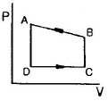
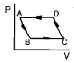
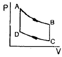
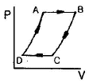
(정답률: 86%)
18. 오토기관(Otto cycle)의 열효율을 옳게 나타낸 식은? (단, r는 압축비, K는 비열비이다.)
- 1-(1/r)K-1
- 1-(1/r)K
- 1-(1/r)K+1
- 1-(1/r)K+2
(정답률: 85%)
19. 순수한 물질이 기-액 평형하에 있을 때. 액체와 증기의 열역학 성질이 같은 것은?
- 몰 용적
- 몰 엔탈피
- 몰 엔트로피
- 몰 깁스자유에너지
(정답률: 73%)
20. 고체 MgCO3가 부분적으로 분해되어 있는 계의 자유도는?
- 1
- 2
- 3
- 4
(정답률: 54%)
2과목: 단위조작 및 화학공업양론
21. 다음 반응의 표준반응열은? [ C2H5OH(L) + CH3COOH(L) → CH3COOC2H5(L) + H2O(L) ] (단, 표준연소열 △H"298 은 C2H3OH(L) = -326.7kcal/mol, CH3COOH(L) = -208.4kcal/mol, CH3COOC2H5(L) = -538.8kcal/mol, H2O(L) = Okcal/mol 이다.)
- +3.7kcal/mol
- -3.7kcal/mol
- -6.7kcal/mol
- +6.7kcal/mol
(정답률: 73%)
22. [CH4+H2O→CO+3H2] 반응에서 수소생성속도는 6mol/h 이다. 메탄이 수증기와 반응하여 일산화탄소와 수소를 정상적으로 생성시킬 때 메탄의 소비속도(mol/h)는?
- 0.5
- 1
- 1.5
- 2
(정답률: 87%)
23. 200g 의 CaCl2 가 1몰당 6몰의 비율로 공기 중의 수분을 흡수할 경우 발생하는 열은 몇 kcal 인가?
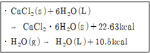
- 85.6
- 154.3
- 174.2
- 194.3
(정답률: 53%)
24. 다음과 같은 일반적인 베르누이의 정리에 적용되는 조건이 아닌 것은?
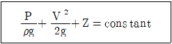
- 직선관에서만의 흐름이다.
- 마찰이 없는 흐름이다.
- 정상 상태의 흐름이다.
- 같은 유선상에 있는 흐름이다.
(정답률: 78%)
25. 이상기체의 정압열용량(Cp)과 정용열용량(Cv)에 대한 설명 중 틀린 것은?
- Cv 가 Cp 보다 기체상수(R) 만큼 작다.
- 정용계를 가열시키는데 열량이 정압계보다 더 많이 소요된다.
- Cp 는 보통 개방계의 열출입을 결정하는 물리량이다.
- Cv 는 보통 폐쇄계의 열출입을 결정하는 물리량이다.
(정답률: 62%)
26. 물과 혼합되지 않는 미지의 물질을 T=98℃, P=773mmHg에서 수증기 증류하였다. 물의 증기압은 98°C 에서 708mmHg 이고 증류액 중 물의 무게조성은 75wt% 이다. 이 때 미지물질의 분자량(g/mol)은얼마인가?
- 23.35
- 65.35
- 141.35
- 162.35
(정답률: 46%)
27. 공기 319kg 과 탄소 24kg 을 반응로 안에서 완전연소 시킬 때 미반응 산소의 양은 약 몇 kg 인가?
- 9.9
- 4.9
- 2.3
- 0
(정답률: 64%)
28. 기체 A의 30vo1%와 기체 B의 70vol%의 기체 혼합물에서 기체 B의 일부가 흡수탑에서 산에 흡수되어 제거된다. 이 흡수탑을 나가는 기체 혼합물 조성에서 기체 A가 80vol%이고 흡수탑을 들어가는 혼합기체가 100mlol/h라 하면 기체 B는 몇 mol/h가 흡수되겠는가?
- 52.5
- 62.5
- 72.5
- 82.5
(정답률: 86%)
29. 비리얼상태식의 설명으로 틀린 것은?
- 제2비리얼 계수는 2분자간 상호작용을 고려한 계수이다.
- 비리얼계수는 온도와 압력의 함수이다.
- 제 2, 3, 4, 5, 6, … 비리얼계수가 0 이면 이상기체 상태식이 된다.
- 이상기체의 물리량도 비리얼상태식으로 구할 수 있다.
(정답률: 67%)
30. 표준대기압에서 압력게이지로 20psi 를 얻었다. 절대압은 얼마인가?
- 14.7psi
- 34.7psi
- 55.7psi
- 65.7psi
(정답률: 93%)
31. 내경 10cm 관을 통해 층류로 물이 흐르고 있다. 관의 중심유속이 2cm/s 일 경우 관벽에서 2cm 떨어진 곳의 유속은 약 몇 cm/s 인가?
- 0.42
- 0.86
- 1.28
- 1.68
(정답률: 44%)
32. 관속을 흐르는 난류의 압력 손실은?
- 평균유속에 비례한다.
- 평균유속의 제곱에 비례한다.
- 평균유속의 제곱근에 반비례한다.
- 관의 직경의 제곱에 비례한다.
(정답률: 71%)
33. 분자량이 296.5인 oil 의 20°C 에서의 점도를 측정하는데 Ostwald 점도계를 사용했다. 이 온도에서 증류수의 통과시간이 10초이고 oil 의 통과시간이 2.5분 걸렸다. 같은 온도에서 증류수의 밀도와 oil 의 밀도가 각각 0.9982g/cm3, 0.879g/cm3 이라면 이 oil 의 점도는?
- 0.13Poise
- 0.17Poise
- 0.25Poise
- 2.17Poise
(정답률: 32%)
34. FPS 단위로부터 레이놀즈수를 계산한 결과 1000 이었다. MKS 단위로 환산하여 레이놀즈수를 계산하면 그 값은 얼마로 예상할 수 있는가?
- 10
- 136
- 1000
- 13600
(정답률: 88%)
35. Fanning 식을 옳게 나타낸 것은? (단, f 는 마찰계수, L 은 관의 길이, D는 관의 직경,
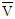
는 평균유속, gc 는 중력환산계수이다.)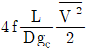
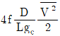
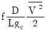
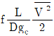
(정답률: 58%)
36. 유체가 내경이 100mm관에서 내경이 200mm관으로 확대되어 들어간다. 이 때 확대 손실계수를 구하면?
- 0.250
- 0.750
- 0.500
- 0.563
(정답률: 24%)
37. 성분 A 의 분압을
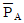
라 하고 그 성분의 몰분율을 XA 라고 할 때 XA 가 작은 범위에서는 와 XA 가 직선의 관계를 갖는다. 이와 같은 관계를 무슨 법칙이라고 하는가?
와 XA 가 직선의 관계를 갖는다. 이와 같은 관계를 무슨 법칙이라고 하는가?- Raoult의 법칙
- Henry의 법칙
- Gibbs의 법칙
- Dalton의 법칙
(정답률: 15%)
38. 벤젠 40mol% 와 톨루엔 60mol% 의 혼합물을 200kmol/h 의 속도로 정류탑에 비점으로 공급한다. 유출액의 농도는 95mol% 벤젠과 관출액의 농도는 98mol% 의 톨루엔이다. 이 때 최소환류비를 구하면 얼마인가? (단, 벤젠과 톨루엔의 순성분 증기압은 각각 1180, 481mmHg 이다.)
- 1.5
- 1.7
- 1.9
- 2.1
(정답률: 75%)
39. 체판(sieve plate)의 축방향 왕복운동을 유도하여 액상간의 혼합이 이루어지는 추출장치는?
- 혼합기-침강기(mixer-settler)
- 교반탑 추출기(agitated tower extractor)
- 원심추출기(certrifugal extractor)
- 맥동탑(pulse column)
(정답률: 31%)
40. 흡수탑의 충전물 선정 시 고려해야 할 조건으로 가장 거리가 먼 것은?
- 기액간의 접촉률이 좋아야 한다.
- 압력강하가 너무 크지 않고 기액간의 유통이 잘 되어야 한다.
- 탑내의 기액물질에 화학적으로 견딜수 있는 것이어야 한다.
- 규칙적인 배열을 할 수 있어야 하며 공곡률이 가능한 한 작아야 한다.
(정답률: 87%)
3과목: 공정제어
41. 증류탑의 일반적인 제어에서 공정출력(피제어) 변수에 해당하지 않는 것은?
- 탑정생산물 조성
- 증류탑의 압력
- 공급물 조성
- 탑저 액위
(정답률: 54%)
42. 다음 비선형공정을 정상상태의 데이터 ys, us에 대해 선형화한 것은?
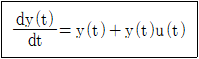
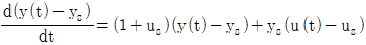
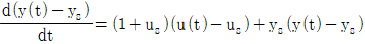
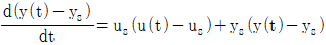
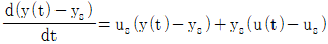
(정답률: 50%)
43. 전달함수가 G(s) = 2/(3s+1) 와 같은 1차 공정 G(s) 에 대하여 원하는 닫힌루프(closed-Ioop) 전달함수 (C/R)d 을 (C/R)d = 1/(s+1) 이 되도록 제어기를 정하고자 한다. 이로부터 얻어지는 제어기는 어떤 형태이며 그 제어기의 조정(tuning) 파라미터는 얼마인가?
- P 제어기이며 Kc=2/3 이다.
- PI 제어기이며 Kc=1.5, τI=3 이다.
- PD 제어기이며 Kc=1/3, τD=2 이다.
- PID 제어기이며 Kc=1.5, τI=2, τD=3 이다.
(정답률: 50%)
44. 저감쇠(underdamped) 2차공정의 특성이 아닌 것은?
- Damping 계수(damping factor)가 클수록 상승시간(rise time)이 짧다.
- 감쇠비(decay ratio)는 overshoot의 제곱으로 표시된다.
- Overshoot 은 항상 존재한다.
- 공진(resonance)이 발생할 수도 있다.
(정답률: 67%)
45. d 초의 수송지연을 가진 공정에 단위계단 입력을 적용했을 때 얻어지는 출력의 라플라즈 변환(Laplace transform)은 무엇인가?
- sｅ-ds
- sｅds
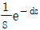
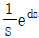
(정답률: 84%)
46. 제어계의 구성요소 중 제어오차(에러)를 계산하는 것은 어느 부분에 속하는가?
- 측정요소(센서)
- 공정
- 제어기
- 최종제어요소(엑츄에이트)
(정답률: 70%)
47. PI 제어기가 반응기 온도제어루프에 사용되고 있다. 다음의 변화에 대하여 계의 안정성 한계에 영향을 주지 않는 것은?
- 온도전송기의 span 변화
- 온도전송기의 영점 변화
- 밸브의 trim 변화
- 반응기 원료 조성 변화
(정답률: 67%)
48. ZN 튜닝룰은 kc=0.6kcu, τi=Pu/2, τd=Pu/8 이다. kcu, Pu는 임계이득과 임계주기이고, kc, τi, τd 는 PID 제어기의 비례이득, 적분시간, 미분시간이다. 공정에 공정입력 u(t)=sin(πt) 를 적용할 때 공정출력은 y(t)=-6sin(πt) 가 되었다. ZN 튜닝룰을 사용할 때, 이 공정에 대한 PID 제어기의 파라미터는 얼마인가?
- kc=3.6, τi=1, τd=0.25
- kc=0.1, τi=1, τd=0.25
- kc=3.6, τi=π/2, τd=π/8
- kc=0.1, τi=π/2, τd=π/8
(정답률: 36%)
49. 다음 미분방정식을 Laplace 변환하여 Y(s)를 구한 것은?
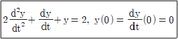
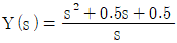
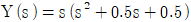
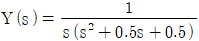
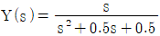
(정답률: 77%)
50. PID 제어기 조율에 대한 지침 중 잘못된 것은?
- 적분시간은 미분시간 보다 작게 주되 1/4 이하로는 줄이지 않는 것이 바람직하다.
- 공정이득(process gain)이 커지면 비례이득(proportional gain)은 대략 반비례의 관계로 줄인다.
- 지연시간(dead time)/시상수(time constant) 비가 커질 수록 비례이득을 줄인다.
- 적분시간은 시상수와 비슷한 값으로 설정한다.
(정답률: 43%)
51. 다음의 공정변수 제어 중 미분동작이 제어성능 향상에 가장 도움이 되는 경우는?
- 배관을 흐르는 기체 유량 제어
- 배관을 흐르는 액체 유량 제어
- 혼합 탱크의 액위 제어
- 반응기의 온도 제어
(정답률: 54%)
52. 어떤/계의 전달함수는 1/(τs+1) 이며, 이때 τ=0.1분이다. 이 계에 unit step change 가 주어졌을 0.1분 후의 응답은?
- Y(t) = 0.39
- Y(t) = 0.63
- Y(t) = 0.78
- Y(t) = 0.86
(정답률: 58%)
53. 어떤 자동제어계의 출력이 다음과 같이 주어질 때 C(t)의 정상상태 값은?
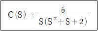
- 2/5
- 2
- 5/2
- 5
(정답률: 86%)
54. 특성방정식에 대한 설명 중 틀린 것은?
- 주어진 계의 특성방정식의 근이 모두 복소평면의 왼쪽 반평면에 놓이면 계는 안정하다.
- Routh test에서 주어진 계의 특성방정식이 Routh array의 처음 열의 모든 요소가 0 이 아닌 양의 값이면 주어진 계는 안정하다.
- 주어진 계의 특성방정식이 S4 + 3S3 - 4S2 + 7=0일 때 이 계는 안정하다.
- 특성방정식이 S3 + 2S2 + 2S + 40 = 0인 계에는 양의 실수부를 가지는 2개의 근이 있다.
(정답률: 64%)
55. 영점(zero)이 없는 2차공정의 Bode 선도가 보이는 특성을 잘못 설명한 것은?
- Bode 선도 상의 모든 선은 주파수의 증가에 따라 단순 감소한다.
- 제동비(damping factor)가 1보다 큰 경우 정규화된 진폭비의 크기는 1보다 작다.
- 위상각의 변화 범위는 0도에서 -180도까지이다.
- 제동비(damping factor)가 1보다 작은 저감쇠(under damped)인 경우 위상각은 공명진동수에서 가장 크게 변화한다.
(정답률: 43%)
56. 안정한 closed loop 대한 설명 중 옳은 것은?
- error 가 시간이 경과함에 따라 감소한다.
- error 가 시간이 경과함에 따라 진동 발산한다.
- error 가 시간이 경과함에 따라 커진다.
- error 가 초기에는 일정하나 점차적으로 커진다.
(정답률: 67%)
57. f(t)의 Laplace 변환 L(f(t)) 를 F(s) 라 할때 다음 Laplace 변환의 특성 중 틀린 것은?
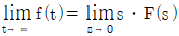
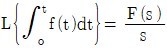
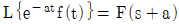
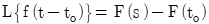
(정답률: 77%)
58. 1차계에 사인파 함수가 입력될 때 위상지연(phase lag)은 주파수가 증가함에 따라서 어떻게 변하는가?
- 증가한다.
- 감소한다.
- 무관하다.
 만큼 늦어진다.
만큼 늦어진다.
(정답률: 43%)
59. 1차계의 시상수 τ에 대하여 잘못 설명한 것은?
- 계의 저항과 용량(capacitance)과의 곱과 같다.
- 입력이 단위계단함수일 때 응답이 최종치의 85%에 도달하는데 걸리는 시간과 같다.
- 시상수가 큰 계일수록 출력함수의 응답이 느리다.
- 시간의 단위를 갖는다.
(정답률: 67%)
60. 특성방정식에 관한 설명으로 옳은 것은?
- 특성방정식의 근 중 하나라도 복소수근을 가지면 그 시스템은 불안정하다.
- 특성방정식의 근 모두가 실근이면 그 시스템은 안정하다.
- 특성방정식의 근이 허수축에서 멀어질수록 응답은 빨라진다.
- 특성방정식의 근이 실수축에서 멀어질수록 진동주기가 커진다.
(정답률: 44%)
4과목: 공업화학
61. 다음 중 나트로벤젠을 어떠한 물질과 같이 환원시켰을 때 아닐린(aniline)을 생성하는가?
- 전해환원수
- Zn + 물
- Zn + 염기
- Fe + 강산
(정답률: 93%)
62. Kevlar 섬유의 제조에 필요한 단량체는?
- terephthalic acid + 1.4-phenylene diamine
- isophthalic acid + 1.4-phenylene diamine
- terephthalic acid + 1.3-phenylene diamine
- isophthalic acid + 1.3-phenylene diamine
(정답률: 79%)
63. Fischer-Tropsch 반응을 옳게 표현한 것은?
- nCO + (2n+1)H2 → CnH2n+2 + nH2O
- CnH2n+2 + H2O → CH4 + CO2
- CH3OH + H2 → HCHO + H2O
- CO2 + H2 → CO + H2O
(정답률: 77%)
64. 연실법 황산제조 공정 중 glover 탑에서 질소산화물 공급에 HNO3 를 사용할 경우, 36wt% 의 HNO3 20kg 으로 약 몇 kg 의 NO 를 발생시킬 수 있는가?
- 0.8
- 1.7
- 2.2
- 3.4
(정답률: 64%)
65. 폴리아미드계인 nylon 66 이 이용되는 분야에 대한 설명으로 가장 거리가 먼 것은?
- 용융방사한 것은 직물로 사용된다.
- 고온의 전열기구용 재료로 이용된다.
- 로우프 제작에 이용된다.
- 사출성형에 이용된다.
(정답률: 71%)
66. 접촉식 황산제조에서 SO3 흡수탑에 사용하기에 적합한 황산의 농도와 그 이유를 바르게 나열한 것은?
- 76.5%, 황산 중 수증기 분압이 가장 낮음
- 76.5%, 황산 중 수중기 분압이 가장 높음
- 98.3%, 황산 중 수증기 분압이 가장 낮음
- 98.3%, 황산 중 수증기 분압이 가장 높음
(정답률: 87%)
67. 불포화 지방산이 많이 포함하게 되면 유지의 점도는 어떻게 되겠는가?
- 높아진다.
- 낮아진다.
- 변화 없다.
- 높아지다 점점 일정해진다.
(정답률: 69%)
68. 열가소성 수지의 대표적인 종류가 아닌 것은?
- 에폭시수지
- 염화비닐수지
- 폴리스티렌
- 폴리에틸렌
(정답률: 94%)
69. 연실식 황산제조 공정 중 게이류삭 탑(Gay-Lussac tower)에서 일어나는 반응은?
- 2HSO4NO + SO2 + 2H2O ⇆ 2H2SO4NO + H2SO4
- 4NO + 3O2 + 2H2O ⇆ 4HNO3
- 2HSO4NO + SO2 + 2H2O ⇆ 2H2SO4NO + H2SO4
- 2H2SO4 + NO + NO2 ⇆ 2HSO4NO + H2O
(정답률: 62%)
70. 가솔린의 옥탄가에 대한 설명으로 옳은 것은?
- n-헵탄의 옥탄가를 100 으로 한 값이다.
- 일반적으로 동일계열의 탄화수소에서는 분자량이 큰 것 일수록 옥탄가는 높다.
- 일반적으로 곁가지가 많은 구조의 탄화수소일수록 옥탄가가 높다.
- 나프텐계 탄화수소는 같은 탄소수의 n-파라핀보다 옥탄가가 낮고 방향족 탄화수소보다 크다.
(정답률: 60%)
71. 다음 중 비료의 3요소에 해당하는 것은?
- N, P2O5, CO2
- K2O, P2O5, CO2
- N, K2O, P2O5
- N, P2O5, C
(정답률: 94%)
72. 루이스산 촉매에 해당하는 AlCl3 와 BF3 는 어떤 시약에 해당하는가?
- 친전자시약
- 친핵시약
- 라디칼 제거시약
- 라디칼 개시시약
(정답률: 67%)
73. 묽은 질산의 농축제로 다음 중 가장 적당한 것은?
- 진한 염산
- 진한 황산
- 진한 아세트산
- 진한 인산
(정답률: 77%)
74. 반도체 공정 중 감광되지 않은 부분을 제거하는 공정은?
- 노광
- 에칭
- 세정
- 산화
(정답률: 75%)
75. 다음 중 연실 내에서 일어나는 반응으로 거리가 먼 것은?
- SO3 + H2O → H2SO4
- 2NO + (1/2)O2 → N2O3
- NO + NO2 + 2H2SO4 → 2HSO4NO + H2O
- 2SO2 + O2 + N2O3 + H2O → 2HSO4⋅NO
(정답률: 43%)
76. PVC 의 분자량 분포가 다음과 같을 때 수평균분자량(
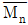
)과 중량평균 분자량(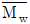
)은?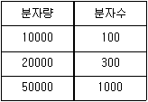
 = 4.1×104,
= 4.1×104,  = 4.6×104
= 4.6×104 = 4.6×104,
= 4.6×104,  = 4.1×104
= 4.1×104 = 1.2×104,
= 1.2×104,  = 1.3×104
= 1.3×104 = 1.3×104,
= 1.3×104,  = 1.2×104
= 1.2×104
(정답률: 71%)
77. 건식법에 의한 인산제조공정에 대한 설명 중 옳은 것은?
- 인의 농도가 낮은 인광석을 원료로 사용할 수 있다.
- 고순도의 인산은 제조할 수 없다.
- 전기로에서는 인의 기화와 산화가 동시에 일어난다.
- 대표적인 건식법은 이수석고법이다.
(정답률: 67%)
78. 암모니아 산화법에 의한 질산 제조에서 백금-로듐(Pt-Rh) 촉매에 대한 설명 중 옳지 않은 것은?
- 백금(Pt) 단독으로 사용하는 것보다 수명이 연장된다.
- 촉매 독물질로서는 비소, 유황 등이 있다.
- 동일 온도에서 로듐(Rh) 함량이 10% 인 것이 2% 인 것보다 전화율이 낮다.
- 백금(Pt) 단독으로 사용하는 것보다 내열성이 강하다.
(정답률: 79%)
79. 소금물을 분해하여 수산화나트륨을 제조하려고 한다. 1kg의 수산화나트륨을 제조할 때 필요한 소금(NaCl)의 양은 약 몇 kg 인가? (단, 반응은 화학양론적으로 진행한다고 가정하며, Na 와 Cl의 원자량은 각각 23 과 35.5 이다.)
- 0.684
- 1.463
- 2.735
- 2.925
(정답률: 90%)
80. 암모니아 생성평형에 있어서 압력, 온도에 대한 Tour 의 실험결과와 일치하는 것은?
- 원료기체의 몰조성이 N2 : H2 = 3 : 1 일 때 암모니아 평형 농도는 최대가 된다.
- 촉매의 농도가 증가하면 암모니아의 평형농도는 증가한다.
- 암모니아 평형농도는 반응온도가 높을수록 증가한다.
- 암모니아 평형농도는 압력이 높을수록 증가한다
(정답률: 57%)
5과목: 반응공학
81. CH4 + 2S2 → CS2 + 2H2S 가 1atm, 일정 온도 600°C 의 관형반응기에서 진행되고, 황과 메탄의 몰유속은 각각 47.6, 23.8mol/h 이다. 반응속도 -rs2 = kc CCH4 Cs2, 속도상수 k = 11.98 x 106 cm3/h⋅mol 일 때 메탄을 18% 전화시키는데 소요체류시간은 몇 h인가?
- 0.0039
- 0.0075
- 0.0121
- 0.042
(정답률: 알수없음)
82. 반응 속도식이 -rA = kCA 인 A→R의 액상 반응을 다음 그림과 같이 직렬로 연결된 두 반응기에서 시행할 때 이상혼합반응기(Ideal mixed flow reactor)를 떠나는 A 의 농도는 얼마인가? (단 k = 1h-1, A 와 R 의 초기 농도는 각각 CA0 = 0.01mol/L, CR0 = 0, 이상관형반응기 P(plug flow reactor) 및 혼합반응기 M 의 공간시간(space time)은 각각 0.5h 이다.)
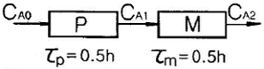
- 0.004mol/L
- 0.003mol/L
- 0.0025mol/L
- 0.0021mol/L
(정답률: 38%)
83. 회분식 반응기(batch reactor)에서 균일계 비가역 1차 직렬 반응
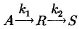
이 일어날 때 R 농도의 최대값은 얼마인가? (단, k1=1.5min-1, k2= 3min-1, 각 물질의 초기 농도 CAO=5mol/L, CRO=0, CSO=0 이다.)- 1.25mol/L
- 1.67mol/L
- 2.5mol/L
- 5.0mol/L
(정답률: 47%)
84. A → R n1차 반응, A → S n2차 반응(desired), A → T n3차 반응에서 S가 요구하는 물질이고, n1 = 3, n2 = 1, n3 = 2 일 때에 대한 설명으로 다음 중 가장 옳은 것은?
- 플러그흐름반응기를 쓰고, 전화율을 낮게 한다.
- 플러그흐름반응기를 쓰고, 전화율을 높게 한다.
- 혼합흐름반응기를 쓰고, 전화율을 낮게 한다.
- 혼합흐름반응기를 쓰고, 전화율을 높게 한다.
(정답률: 알수없음)
85. A ⇆ B + C 평형반응이 1bar, 560℃ 에서 진행될 때 평형상수 KP = PB PC /PA가 100mbar 이다. 평형에서 반응물 A 의 전화율은?
- 0.12
- 0.27
- 0.33
- 0.48
(정답률: 47%)
86. 반응식 A → B 에서 속도식이 다음과 같이 주어졌을 때 반응 초기 (고농도의 CA)의 속도식은 몇 차이며 속도상수는 얼마인가?
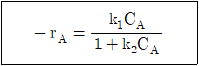
- 0차 반응, 속도상수 = k1
- 0차 반응, 속도상수 = k1/k2
- 1차 반응, 속도상수 = k1
- 1차 반응, 속도상수 = k1/k2
(정답률: 58%)
87. A → R, rR = k1CAa1 이 원하는 반응이고 A → S, rs = k2CAa2이 원하지 않는 반응일 때 R을 더 많이 얻기 위한 방법으로 옳은 것은?
- a1 = a2 일 때는 A의 농도를 높인다.
- a1 ＞ a2 일 때는 A의 농도를 높인다.
- a1 ＜ a2 일 때는 A의 농도를 높인다.
- a1 = a2 일 때는 A의 농도를 낮춘다.
(정답률: 74%)
88. 이상형 반응기의 대표적인 예가 아닌 것은?
- 회분식 반응기
- 플러그흐름 반응기
- 혼합흐름 반응기
- 촉매 반응기
(정답률: 58%)
89. 반응속도상수 k의 단위는?
- (시간)(농도)n-1
- (시간)(농도)1-n
- (시간)-1(농도)n-1
- (시간)-1(농도)1-n
(정답률: 40%)
90. 반응기에 대한 설명 중 옳지 않은 것은?
- 회분식 반응기에는 정압 반응기가 있다.
- 혼합 흐름 반응기에서는 입구 농도와 출구 농도의 변화가 없다.
- 이상적 관형 반응기에서 유체의 흐름은 플러그흐름이다.
- 회분식 반응기에서는 위치에 따라 조성이 일정하다.
(정답률: 69%)
91. 회분식 반응기에서 각 반응시간에 따른 반응 진행도를 구하는 방법으로 가장 거리가 먼 것은?
- 이론에 의한 계산 방법
- 정압계의 부피 변화 측정에 의한 방법
- 정용계의 총 압력변화 측정에 의한 방법
- 전기전도도와 같은 유체의 물성변화 측정에 의한 방법
(정답률: 50%)
92. HBr 의 생성반응 속도식이 다음과 같을 때 k2 의 단위에 대한 설명으로 옳은 것은?
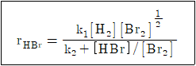
- 단위는 [m3⋅s/mol] 이다.
- 단위는 [mol/m3⋅s] 이다.
- 단위는 [(mol/m3)-0.5(s)-1] 이다.
- 단위는 무차원(dimensionless) 이다.
(정답률: 77%)
93. 균일 기상반응 A → 2R 에서 반응기에 50% A 와 50% 비활성 물질의 원료를 유입할 때 A 의 확장인자(Expansion factor) εA는 얼마인가?
- 0.5
- 1.0
- 2.0
- 4.0
(정답률: 70%)
94. A → C 의 촉매반응이 다음과 같은 단계로 이루어진다. 탈착반응이 율속단계일 때 Langmuir Hinshelwood모델의 반응속도식으로 옳은 것은? (단, A 는 반응물, S 는 활성점, AS 와 CS 는 흡착중간체이며, k 는 속도상수, K 는 평형상수, So 는 초기 활성점, []는 농도를 나타낸다.)
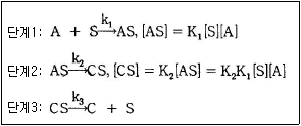
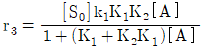
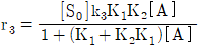
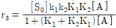
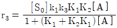
(정답률: 67%)
95. 다음의 특징을 갖는 반응기의 형식에 가장 가까운 것은?
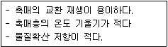
- 고정상 반응기
- 유동상 반응기
- 액상 현탁 반응기
- 기상 균일 반응기
(정답률: 58%)
96. 회분식반응거나 관형흐름반응기에서 연속반응(A→R→S, 각각의 속도상수는 k1, k2) 이 일어날 때 중간생성물 R 이 최대가 되는 시간은?
- k1, k2 의 기하평균의 역수
- k1, k2 의 산술평균의 역수
- k1, k2 의 대수평균의 역수
- k1, k2 에 관계없다.
(정답률: 71%)
97. 반응물 A 와 B 가 반응하여 목적하는 생성물 R 과 그 밖의 생성물이 생긴다. 다음과 같은 반응식에 대해서 생성물 R 의 생성을 높이기 위한 반응물 농도의 조건은?
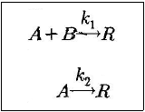
- CB 를 크게 한다.
- CA 를 크게 한다.
- CA, CB 둘 다 상관없다.
- CB 를 작게 한다.
(정답률: 알수없음)
98. 다음 그림으로 표시된 반응은? (단, C 는 농도, t 는 시간을 나타낸다.)
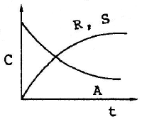
- A + R → S
- A + S → R
- A → R → S
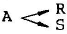
(정답률: 86%)
99. 복합 반응의 반응속도상수의 비가 다음과 같을 때에 관한 설명으로 옳지 않은 것은? (단, 반응 1 이 원하는 반응이다.)
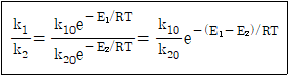
- 활성화 에너지가 크면 고온이 적합하다.
- 평행 반응에서 E1＞E2 이면 고온을 사용한다.
- 연속 단계에서 E1＞E2 이면 고온을 사용한다.
- 온도가 상승할 때 E1＞E2 이면 K1/K2 은 감소한다.
(정답률: 70%)
100. 부피 100L 이고 space time 이 5min 인 혼합흐름반응기에 대한 설명으로 옳은 것은?
- 이 반응가는 1 분에 20L 의 반응물을 처리할 능력이 있다.
- 이 반응기는 1 분에 0.2L 의 반응물을 처리할 능력이 있다.
- 이 반응기는 1 분에 5L의 반응물을 처리할 능력이 있다.
- 이 반응기는 1 분에 100L 의 반응물을 처리할 능력이 있다.
(정답률: 67%)